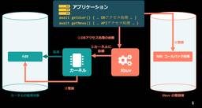

SIOS Tech Lab
https://tech-lab.sios.jp
サイオステクノロジーのエンジニアが クラウド、OSS、認証に関する様々な情報を提供します。
フィード
OSSサポートの現場から！BIND / ルートKSKロールオーバーへの対応
SIOS Tech Lab
こんにちは、OSSよろず相談室のSKです。OSS に関するお問い合わせが日々寄せられる中で、今回は 自社でDNSサーバを運用している環境において、BIND の DNSSEC に関連して寄せられたお問い合わせをご紹介します ...OSSサポートの現場から！BIND / ルートKSKロールオーバーへの対応 first appeared on SIOS Tech Lab.
3日前

SIOS OSS よろず Newsメルマガ100号記念！
SIOS Tech Lab
2018年6月の創刊から、毎月一歩ずつ歩みを進めて参りました「SIOS OSSよろずNews」のメルマガも、このたび「100号」という大きな節目を迎えることができました。長きにわたり、私たちの発信する情報に目を通し、温か ...SIOS OSS よろず Newsメルマガ100号記念！ first appeared on SIOS Tech Lab.
3日前

知っておくとちょっと便利！ターミナル操作の時短テクニック2
SIOS Tech Lab
今号では、2026年 5月号でご紹介した Linux におけるターミナル操作に関する tips の続きをご紹介します！ 2026年 5月号の記事はこちら カーソル移動のショートカットキーあれこれ [Ctrl] + [A] ...知っておくとちょっと便利！ターミナル操作の時短テクニック2 first appeared on SIOS Tech Lab.
4日前

【2026年7月】OSSサポートエンジニアが気になった！OSS最新ニュース
SIOS Tech Lab
こんにちは！ 今月も「OSSのサポートエンジニアが気になった！OSSの最新ニュース」をお届けします。 2026/7/1、LPI-Japan は Linux サーバ構築の知識を学べる学習用教材「Linuxサーバー構築標準教 ...【2026年7月】OSSサポートエンジニアが気になった！OSS最新ニュース first appeared on SIOS Tech Lab.
4日前

世界一わかりみの深いasync/awaitによる非同期処理 274
274
SIOS Tech Lab
こんにちは、サイオステクノロジー武井です。今回はasync/awaitの動きをOSカーネルのレイヤーから追うことで理解を深めようとしてみます。 1. async/awaitはむずい async/await、なかなかにとっ ...世界一わかりみの深いasync/awaitによる非同期処理 first appeared on SIOS Tech Lab.
7日前

Linux初心者がAzure仮想マシンでHTTPサーバを構築した話
SIOS Tech Lab
こんにちは！新卒でサイオステクノロジーに入社したごままぐろです。 本記事では、Linux初心者が研修で得た学びを以下の構成でご紹介します。LinuxはITパスポートなどの資格勉強で少し知っている程度だったのですが、こ ...Linux初心者がAzure仮想マシンでHTTPサーバを構築した話 first appeared on SIOS Tech Lab.
9日前
KubeBlocksでMySQLを導入！Kubernetes上でのDB構築を体験
SIOS Tech Lab
はじめに こちらの記事で実際にKubernetes環境にKubeBlocksを導入し、DBaaSの基盤を構築しました。 今回は、作成したDBaaS基盤の上に実際にMySQLクラスターを構築していきます。 導入環境構成図 ...KubeBlocksでMySQLを導入！Kubernetes上でのDB構築を体験 first appeared on SIOS Tech Lab.
10日前
生成AIを「壁打ち相手」にしてカスタマージャーニーマップのインサイトを掘り下げてみる
SIOS Tech Lab
プロダクト開発やサービスデザインにおいて、ユーザーの体験を時系列で可視化する「カスタマージャーニーマップ」。ユーザー理解を深め、チームの目線を合わせるための強力なツールですが、作成する中で以下のような壁にぶつかったことは ...生成AIを「壁打ち相手」にしてカスタマージャーニーマップのインサイトを掘り下げてみる first appeared on SIOS Tech Lab.
15日前
OSSサポートの現場から！Zabbixでサーバの構成情報を取得する
SIOS Tech Lab
こんにちは、OSSよろず相談室のSKです。OSS に関するお問い合わせが日々寄せられる中で、今回も統合監視ツール「Zabbix」に関連して寄せられたお問い合わせをご紹介します。 これまで有償の管理製品を使って、各サーバー ...OSSサポートの現場から！Zabbixでサーバの構成情報を取得する first appeared on SIOS Tech Lab.
16日前
AIの使い方を学ぶ前に、まずソフトウェア工学を
SIOS Tech Lab
AIの使い方を学ぶより先に、ソフトウェア工学を理解しないといけないんじゃないかと思います。 AIにテストコードを書かせた場合を例に説明します。AIはテストコードを高速で書いてくれますが、テスト理論を理解していないと、バグ ...AIの使い方を学ぶ前に、まずソフトウェア工学を first appeared on SIOS Tech Lab.
17日前